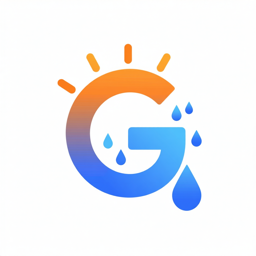

macOS menu-bar app

BLE Thermo
I have a handful of cheap Govee Bluetooth thermometers scattered around the house: the attic, the basement, the garage, a couple of bedrooms. I wanted to see them all in one place and keep a history, without an account or a cloud service. So I wrote this little menu-bar app for the Mac that sits near them.
It works well for me. If you have a similar setup, you're welcome to it.
What it does
- Reads Govee sensors passivelyListens for the temperature, humidity and battery level that Govee thermo-hygrometers (H5075 and similar) broadcast over Bluetooth. No pairing, no Govee app, no account.
- Lives in the menu barClick the icon for a panel of current readings, hottest first. Rename sensors to something sensible like “Attic”.
- Keeps a historyLogs every sensor once a minute to a local SQLite file, and can pull older history off a sensor's own memory.
- Serves a web dashboardOpen the Mac's address in any browser on your network for charts by hour, day, month or year, dew point, trend arrows, low-battery warnings, outside weather for comparison, and an optional floor plan with sensor pins.
- Bridges to HomeKitPick which sensors to expose and they show up in the Home app as thermometers with humidity and battery, so you can use them in automations.
- A few extrasOptional Mysa thermostat and HomePod readings, control of the cheap “ELK-BLEDOM” LED strips, and Roku TVs in HomeKit. These grew out of my own house; ignore them if they don't apply.
Getting it running
- Download the zip, unzip it, and drag BLE Thermo into Applications.
- Open it. The app isn't notarized by Apple, so the first launch will be blocked. Go to System Settings → Privacy & Security, scroll down, and click Open Anyway. (Or run
xattr -dr com.apple.quarantine "/Applications/BLE Thermo.app"in Terminal.) - Allow Bluetooth access when asked. Sensors in range should appear within a minute or so.
- For HomeKit, open Settings from the menu-bar icon for the setup code, then add it in the Home app as a bridge.
- The web dashboard runs on port 80. Visit
http://<your-mac's-name>.localfrom another device on the same network.
Fine print
This is a hobby project made for my own house, offered as-is. It's been reliable for me, but it hasn't been tested on many other setups and there's no warranty or support beyond whatever I get around to. Everything stays on your Mac; the only things it reaches out to the internet for are optional: outside weather (Open-Meteo), your rough location for that weather, and Mysa if you sign in.
The source is on GitHub if you'd rather build it yourself or see how it works. Bug reports and pull requests are welcome there.
Version history
- 1.1 · October 2026
- Reworked web dashboard, per-sensor trend arrows, low-battery warnings, outside temperature, humidity and dew point, and an “Open at Login” option.
- 1.0
- First version: menu-bar readings, history logging, web dashboard with dew point, and the HomeKit bridge.